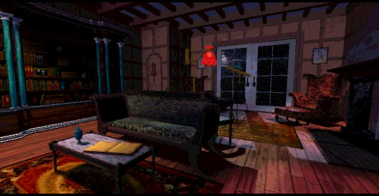
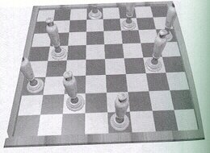
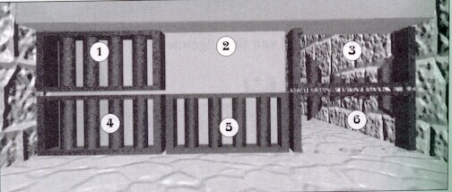
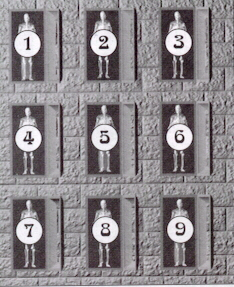
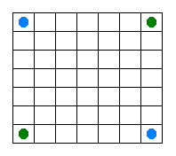
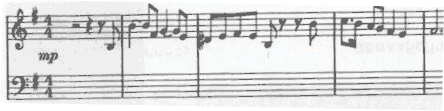
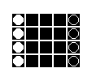

<script type="text/javascript" src="https://web-static.archive.org/_static/js/bundle-playback.js?v=t1Bf4PY_" charset="utf-8"></script>
<script type="text/javascript" src="https://web-static.archive.org/_static/js/wombat.js?v=txqj7nKC" charset="utf-8"></script>
<script>window.RufflePlayer=window.RufflePlayer||{};window.RufflePlayer.config={"autoplay":"on","unmuteOverlay":"hidden"};</script>
<script type="text/javascript" src="https://web-static.archive.org/_static/js/ruffle/ruffle.js"></script>
<script type="text/javascript">
  __wm.init("https://web.archive.org/web");
  __wm.wombat("http://www.famvandermeer.demon.nl:80/7guesthomepage/library.html","20080117111259","https://web.archive.org/","web","https://web-static.archive.org/_static/",
	      "1200568379");
</script>
<link rel="stylesheet" type="text/css" href="https://web-static.archive.org/_static/css/banner-styles.css?v=S1zqJCYt" />
<link rel="stylesheet" type="text/css" href="https://web-static.archive.org/_static/css/iconochive.css?v=qtvMKcIJ" />
<!-- End Wayback Rewrite JS Include -->
<bgsound src="t7g012.mid">
<html><title>The Stauf Mansion-line</title><head><body bgcolor="#000000" text="#ff2300"></head>
<center>
<br>
 
<p>
<br>

</center>
<center>

</center>
<left>
<h2>
"It's a game, everyone for himself, or herself."
</h2>
Welcome to the library, here you can find all the solutions for the puzzles. Just like in the game, the answers can be found in the library.<br>
You can seek help with the book in the library, it will give you hints to explain the nature
of the puzzle and can even solve it for you. But it will not give you the solution, it will
just say 'Solved'. So try to make it on your own, or try this step by step walkthrough.<br>
<p>
<h3>
Library Puzzle
</h3>
We start with the puzzle in the library. It can be found in the
telescope by the window. You must form a sentence by clicking on every letter, the sentence is:
THERE IS NO POSSIBLE WAY
<p><br>
<h3>
Dining room Puzzle
</h3>
On with puzzle two, it's the cake in the dining room. You have to cut the cake in exactly the
same parts, two skulls, two stones and one empty. One solution goes like this.
Click the entire right row (from top to bottom). Click the entire bottom row. Click the entire
right row and the piece below right. Again click the entire right row an click the first and the third (from the top) from the row next to the one you clicked. Then click the upper two rows.
Click what's left of the cake and you're done.
<br>
<p>
<h3>
Kitchen Puzzle
</h3>
Now we go to the kitchen, you must form a sentence by switching letters. The sentence is:
SHY GYPSY SLYLY SPRYLY TRYST BY MY CRYPT. That's it.
<br>
<p>
<h3>
Playroom Puzzle
</h3>
Let's go to the queen's puzzle in the playroom. You have to place eight queens. This picture
shows where to put them.<br>
<center>

</center>
<p>
<h3>
Front door Puzzle
</h3>
Now we go to the front door. There's a little pattern that you have to follow, although it doesn't matter where you start with the spiders. All that you have to keep in mind is that you have to go with the next spider to the place where the first left. As long as you do that you'll make it.
<p>
<br>
<h3>
Knox Puzzle
</h3>
Now we go the Knox room. You have change the rows of bishops. The board will be divided in
seperate parts. The rows from left to right will be called a,b,c,d,e. From bottom to top
will be called 1,2,3,4. So you will have to follow me like chess. The first will be the position of the bishop,
the next will be the place where you have to put him. 
e2-d3, a2-b3, d3-b1, b3-c4, a4-d1, d1-e2, b1-c2, c2-a4, e4-c2, c4-a2, e2-c4, c2-d1, a2-b1, b1-e4, c4-d3, d1-b3, b3-a2, d3-e2, e3-d2, a3-b2, d2-b4, b2-c1, a1-d4, d4-e3, b4-c3, c3-a1, e1-c3, c1-a3, e3-c1, c3-d4, a3-b4, b4-e1, c1-d2, d4-b2, b2-a3, d2-e3 
<p><br>
Now we see the carpet, it's a map of the dungeon. Let's go the grate puzzle.
<p><br>
<h3>
basement Puzzle
</h3>
We're in the kitchen now and we go through the door to the basement.<br>
<center>
<br>
</center>
We divide the puzzle in numbers again, upper-left=1, lower-right=6. Read and click:
5, 6, 3, 2, 5, 6, 3, 2, 1, 4, 5, 6, 3, 2, 5, 4, 1, 2, 3, 6, 5.
<p>
<br>
<h3>
Maze Puzzle
</h3>
If you drew the map from the carpet you can go follow it and that's it, if you didn't I'm
here with the directions. Take the fifth on the right. Take the first on your right.
Take the first on your right. Take the first on your right. Go left. Go right. Straight on and
then take a right turn, you're in.<br>
<p>
<h3>
Crypt Puzzle
</h3>
This is a tricky puzzle, because they open differently every time you start the puzzle.
The job is to close them all and to focus on one at a time. So I'm going to give you
the coffins you have to click to close one. For instance, if the upper left one is open,
you have to click 1, 2 ,4, 3 (example) at the end of these numbers, the upper left coffin 
is closed. Here are all the ways that you have to click to close each coffin.
<p>
<center>
(small survey of the positions and numbers of the coffins)<p><br>
<br>
To close:
Coffin 1: 1,2,3,4,5,7<br>
Coffin 2: 2,4,6,7<br>
Coffin 3: 1,2,3,5,6,9<br>
Coffin 4: 2,3,4,8,9<br>
Coffin 5: 2,4,5,6,8<br>
Coffin 6: 1,2,6,7,8<br>
Coffin 7: 1,4,5,7,8,9<br>
Coffin 8: 1,3,4,6,8<br>
Coffin 9: 2,5,6,7,8,9<br>
<p>
</center>
<br>
There, on with the show.
<p>
<br>
<h3>
Heine Puzzle
</h3>
Now we visit the room of Julia Heine, it's a rather difficult puzzle to describe, but a
rather easy one to solve. We start from the back, Open the last valve, follow the stream and go left and up, open that valve follow to the right, leave that valve, go up and left and open the
valve you come across. Go left and leave the two valves you come across, open the valve that
stands up and follow the stream, you will go up, left and down, leave the first valve, but open
the second. You will go up and left again. You are now close to the heart, click the valve where
your 'stream' stopped. Go right and click the next valve. You will go down and right and up and
then you must click the first valve you meet. You will now be moving away from the heart but
that's a good thing. Open the valve right behind the one you just opened and go right and all the
way down. Leave the five valves you will see unmoved. You're now close to the heart, but a horizontal valve is blocking the road, open it then, go left and open the next valve, you'll go up and open the final valve. Click on the heart and let it all flood out.<p><br>
<h3>
Burden Puzzle
</h3>
That's why the lady is a tramp, we're of to see Martine Burden. On her bed we will encounter the
next puzzle. You must form a sentence, you start in the upper left corner. The trick is that you
can only move three and five spaces forward and backwards. I will give you the sentence that you
will have to make, the puzzle will lead you to the right letters.  The sentence is: THE*SKY*IS*RUDDY*YOUR*FATE*IS*BLOODY. The little suns or stars are used to separate the words, you will have to click them yourselves in the puzzle.
<p>
<br>
<h3>
Dutton Puzzle
</h3>
Dutton likes money, so it's only logical that his puzzle has got something to do with money too. 
The trick is to make a chain of coins by connecting them. The first one is easy. Click the
upper coin then click: below, right,below, right, below, right, below, below, left, up, left,
up, left, up. The next one is rather difficult. You start with the coin which is closest to the
upper left corner. Then click: right, right, down, down, left, left, up, left, down, right, up, up, right, down, left, down, left, up, left. It doesn't matter if there are any coins between
the one you clicked and the one you want to click, he just takes the first one that's available.
<p>
<br>
<h3>
Chapel Puzzle
</h3>
Now we take a religious trip. We take a closer look at the floor in the chapel. We start at the bottom
left. Click the first stone, the click the one on the right, the click the one on the left. Click
the one above and again. Now click the one on the left and click the one on the right of that stone. Click on the stone on the right.
<p>
<br> 
You will now be half way. Click the one above, then click the one on the right. Click the lower 
stone on the right. Click the stone above and click the remaining stone on the right. There.
<p>
<br>
<h3>
Lab Puzzle
</h3>
This puzzle is rather special, because you're playing against Stauf himself. These are the rules of 
the game. You will control the two blue cells, if you click on the field next to the cell
it will multiply, if you pick a field further, the cell will jump to that position, but will not
multiply. If you reach a field and an enemy cell is next to it, the cell who's turn it is shall
automaticaly take over the cell and convert it to it's own kind. The trick of the game is to end
up with more cells than the other when all the fields are full. This game is very, very tricky.
It can be done however, I know it by experience, but if you find the game too hard (no shame there) 
you can visit the book in the library. Each time you visit the book your opponent will become a 
little less good. I will give you my tactic as well. These tactics helped me to defeat Stauf. The first couple of moves
are very important, if you have a good start then you can fight Stauf, if you have a bad start: quit and restart the puzzle,
it's practically impossible to win after a bad start. To make a good start, do the following: Click the cell in the lower 
left corner. Move it to the left, move it up next move, then move it left again. You should have this figure:<br><p>
___O<br>
OOO<br><p>
If all is well your oponent has the same the position only mirrored. The trick is to let him attack first. If he doesn't, 
then move your cell in the top right corner. When he attacks, jump with a cell so that you take over three of his cells in
the bottom row. This will give you a start so that you can compete. Make sure that in the next couple of moves you fill up the
hole that your jumping create in the right corner, otherwise Stauf might be able to jump in. If all is okay then you and Stauf
should about the same amount of cells. From here you're on your own. Remember not to defend and always attack, also beware that 
you're not surrounded by green cells so that you have to jump to make the next move. A jump is only useful if you're sure that
you can score a lot of cells and that you're blue cells cannot be attacked by the void you created by the jump.<br>
<p>
It may not work the first time, but hang in there and keep on trying. I found a couple of solutions on the net, I haven't tried them myself. But if my tactics didn't help you can always try these moves.<p><br>
<p>This is the setup under the microscope, pretend the x�s are spaces. The G�s 
represent Green Cells and the B�s represent Blue cells. Follow the column 
advice, also. Your job is to use your "defending" blue cells to outnumber 
Stauf�s "virus" green cells.
<p>X G F E D C B A<br>1 B X X X X X G<br>2 X X X X X X X<br>3 X X X X X X X<br>4 
X X X X X X X<br>5 X X X X X X X<br>6 X X X X X X X<br>7 G X X X X X B<br>
<p>Follow the moves as listed below. It is important that Stauf makes the 
correct opening move. If he does not, restart the game until he does. 
<p>Move Ego (You, Blue) Stauf<br>1 G1-F1 G7-G6<br>2 G1-G2 G6-G5<br>3 G2-G3 
G5-G4<br>4 G2-F4 G6-F5<br>5 G3-F3 F5-E4<br>6 F1-E3 G6-E5<br>7 G4-F6 F4-G4<br>8 
G7-G6 F3-F2<br>9 E5-D4 F2-D3<br>10 E5-D5 D3-C4<br>11 E4-F2 E5-E4<br>12 F2-E2 
C4-D2<br>13 F6-E6 E2-G2<br>14 D5-C4 D2-C3<br>15 D5-C5 F2-E2<br>16 C4-C2 
E2-C4<br>17 D2-E2 G2-F1<br>18 D2-E1 C5-D6<br>19 A7-C6 E6-F7<br>20 D6-E7 
C3-D1<br>21 D3-C3 A1-B1<br>22 D2-C1 A1-B2<br>23 C4-B3 A1-A2<br>24 C5-A3 
E4-C5<br>25 E3-E4 C5-B4<br>26 E7-D7 C5-C7<br>27 D5-C5 A3-B5<br>28 A2-A4 
C1-A3<br>29 C2-C1 A1-A2<br>30 B5-B6 A4-A5<br>31 C7-A6 D7-B7<br>32 D6-C7 
A6-A7<br>33 D6-D7 
<p><br>
second solution
<p><br>
<p align="center"></p><a name="33mhz">
      <h2>Solution for a 80486/DX33 machine</h2></a><pre>        Move    Ego     Stauf
        #       (Blue)  (Green)

        1.      G1-F1   G7-G6
        2.      G1-G2   G6-G5
        3.      G2-G3   G5-G4
        4.      G2-F4   G6-F5
        5.      G3-F3   F5-E4
        6.      F1-E3   G6-E5
        7.      G4-F6   F4-G4
        8.      G7-G6   F3-F2
        9.      E5-D4   F2-D3
        10.     E5-D5   D3-C4
        11.     E4-F2   E5-E4
        12.     F2-E2   C4-D2
        13.     F6-E6   E2-G2
        14.     D5-C4   D2-C3
        15.     D5-C5   F2-E2
        16.     C4-C2   E2-C4
        17.     D2-E2   G2-F1
        18.     D2-E1   C5-D6
        19.     A7-C6   E6-F7
        20.     D6-E7   C3-D1
        21.     D3-C3   A1-B1
        22.     D2-C1   A1-B2
        23.     C4-B3   A1-A2
        24.     C5-A3   E4-C5
        25.     E3-E4   C6-D7
        26.     B3-B4   C6-B5
        27.     A3-A4   C6-A5
        28.     D5-C6   A5-B7
        29.     D7-C7   A5-B6
        30.     A3-A5   B7-A6
        31.     A4-A3   B7-A7

        Score:  26      23
</pre><a name="66mhz">
      <h2>Solution for a 80486/DX66 machine</h2></a><pre>        Move    Ego     Stauf
        #       (Blue)  (Green)

        1.      G1-F1   G7-G6
        2.      G1-G2   G6-G5
        3.      G2-G3   G5-G4
        4.      G2-F4   G6-F5
        5.      G3-F3   F5-E4
        6.      F1-E3   G6-E5
        7.      G4-F6   F4-G4
        8.      G7-G6   F3-F2
        9.      E5-D4   F2-D3
        10.     E5-D5   D3-C4
        11.     E4-F2   E5-E4
        12.     F2-E2   C4-D2
        13.     F6-E6   E2-G2
        14.     D5-C4   D2-C3
        15.     D5-C5   F2-E2
        16.     C4-C2   E2-C4
        17.     D2-E2   G2-F1
        18.     D2-E1   C5-D6
        19.     A7-C6   E6-F7
        20.     D6-E7   C3-D1
        21.     D3-C3   A1-B1
        22.     D2-C1   A1-B2
        23.     C4-B3   A1-A2
        24.     C5-A3   E4-C5
        25.     E3-E4   C5-B4
	26.     E7-D7   C5-C7
	27.	D5-C5   A3-B5
	28.	A2-A4   C1-A3
	29.	C2-C1   A1-A2
	30.	B5-B6   A4-A5
	31.	C7-A6   D7-B7
	32.	D6-C7   A6-A7   
	33.	D6-D7

        Score:  27      22</pre>

<h3>
Music Puzzle
</h3>
The puzzle in the music room is pretty difficult too. You have to follow note by note the melody that Stauf plays. A trick that works is to put some paper on your screen. Draw the keys on the paper
and give each note a number, this way you can play the tune from the paper. For everyone who can read notes, here is the music
on paper.<br>
<center>
<br>
</center>
<p><br>
<h3>
Bathroom Puzzle
</h3>
A kingdom for a horse or lots of horses for a puzzle. Anyway, you have to change the white horses
with their black counterparts.<br> 
<p>
       

      <center>
      <table>
        <tbody>
        <tr>
          <td colstart="1">Turn #</td>
          <td align="middle" colstart="2">Black Moves</td>
          <td align="middle" colstart="3">White Moves</td></tr>
        <tr>
          <td colstart="1">1)</td>
          <td align="middle" colstart="2">A2-&gt;B3</td>
          <td colstart="3"></td></tr>
        <tr>
          <td colstart="1">2)</td>
          <td colstart="2"></td>
          <td align="middle" colstart="3">E2-&gt;D3-&gt;B1</td></tr>
        <tr>
          <td colstart="1">3)</td>
          <td align="middle" colstart="2">B3-&gt;D1</td>
          <td colstart="3"></td></tr>
        <tr>
          <td colstart="1">4)</td>
          <td colstart="2"></td>
          <td align="middle" colstart="3">E4-&gt;D3-&gt;C4</td></tr>
        <tr>
          <td colstart="1">5)</td>
          <td colstart="2"></td>
          <td align="middle" colstart="3">B1-&gt;A2</td></tr>
        <tr>
          <td colstart="1">6)</td>
          <td align="middle" colstart="2">D1-&gt;C2-&gt;E4</td>
          <td colstart="3"></td></tr>
        <tr>
          <td colstart="1">7)</td>
          <td colstart="2"></td>
          <td align="middle" colstart="3">C4-&gt;E2</td></tr>
        <tr>
          <td colstart="1">8)</td>
          <td colstart="2"></td>
          <td align="middle" colstart="3">A2-&gt;C4</td></tr>
        <tr>
          <td colstart="1">9)</td>
          <td align="middle" colstart="2">E4-&gt;B1</td>
          <td colstart="3"></td></tr>
        <tr>
          <td colstart="1">10)</td>
          <td align="middle" colstart="2">A4-&gt;C2-&gt;E4</td>
          <td colstart="3"></td></tr>
        <tr>
          <td colstart="1">11)</td>
          <td colstart="2"></td>
          <td align="middle" colstart="3">E2-&gt;D1</td></tr>
        <tr>
          <td colstart="1">12)</td>
          <td colstart="2"></td>
          <td align="middle" colstart="3">C4-&gt;B3-&gt;A4</td></tr>
        <tr>
          <td colstart="1">13)</td>
          <td align="middle" colstart="2">B1-&gt;D3</td>
          <td colstart="3"></td></tr>
        <tr>
          <td colstart="1">14)</td>
          <td colstart="2"></td>
          <td align="middle" colstart="3">D1-&gt;B3-&gt;A2</td></tr>
        <tr>
          <td colstart="1">15)</td>
          <td align="middle" colstart="2">D3-&gt;E2</td>
          <td colstart="3"></td></tr>
        <tr>
          <td colstart="1">16)</td>
          <td align="middle" colstart="2">A3-&gt;B2</td>
          <td colstart="3"></td></tr>
        <tr>
          <td colstart="1">17)</td>
          <td colstart="2"></td>
          <td align="middle" colstart="3">E3-&gt;D2-&gt;B4</td></tr>
        <tr>
          <td colstart="1">18)</td>
          <td align="middle" colstart="2">B2-&gt;D4</td>
          <td colstart="3"></td></tr>
        <tr>
          <td colstart="1">19)</td>
          <td colstart="2"></td>
          <td align="middle" colstart="3">E1-&gt;D2-&gt;C1</td></tr>
        <tr>
          <td colstart="1">20)</td>
          <td colstart="2"></td>
          <td align="middle" colstart="3">B4-&gt;A3</td></tr>
        <tr>
          <td colstart="1">21)</td>
          <td align="middle" colstart="2">D4-&gt;C3-&gt;E1</td>
          <td colstart="3"></td></tr>
        <tr>
          <td colstart="1">22)</td>
          <td colstart="2"></td>
          <td align="middle" colstart="3">C1-&gt;E3</td></tr>
        <tr>
          <td colstart="1">23)</td>
          <td colstart="2"></td>
          <td align="middle" colstart="3">A3-&gt;C1</td></tr>
        <tr>
          <td colstart="1">24)</td>
          <td align="middle" colstart="2">E1-&gt;B4</td>
          <td colstart="3"></td></tr>
        <tr>
          <td colstart="1">25)</td>
          <td align="middle" colstart="2">A1-&gt;C3-&gt;E1</td>
          <td colstart="3"></td></tr>
        <tr>
          <td colstart="1">26)</td>
          <td colstart="2"></td>
          <td align="middle" colstart="3">E3-&gt;D4</td></tr>
        <tr>
          <td colstart="1">27)</td>
          <td colstart="2"></td>
          <td align="middle" colstart="3">C1-&gt;B2-&gt;A1</td></tr>
        <tr>
          <td colstart="1">28)</td>
          <td align="middle" colstart="2">B4-&gt;D2</td>
          <td colstart="3"></td></tr>
        <tr>
          <td colstart="1">29)</td>
          <td colstart="2"></td>
          <td align="middle" colstart="3">D4-&gt;B2-&gt;A3</td></tr>
        <tr>
          <td colstart="1">30)</td>
          <td align="middle" colstart="2">D2-&gt;E3</td>
          <td colstart="3"></td></tr></tbody></table></center>

<p>
<br>
<h3>
Temple Puzzle
</h3>
When we visit Hamilton's room, you will notice that puzzle is similar to Dutton's. The same principle only now with cards. Start with the second row, third card, choose the one on your<br>
left, left, down, down, right, right, up, right, down, left, up, right, up.<br>
<p>
Second pattern. Pick the one upper left, go down, right, right, right, up, left, left, down,<br>
right, down, left, up, right. Another puzzle is complete.<br>
<p>
<h3>
Gallery Puzzle
</h3>
When you check out the gallery, you see that Stauf's face is like the puzzle in the crypt.
When a piece of his face is red, you will have to go through the same pattern twice.
I will give another chart.<br><center>
<p>
1: 7, 8, 3, 9, 6, 5, 8, 1, 9, 6<br>
2: 3, 2, 5, 8, 6, 4, 8, 1<br>
3: 1, 4, 9, 7, 8, 5, 4, 3, 7, 8,<br>
4: 1, 4, 5, 6, 2, 8, 6, 7<br>
5: You don't have to use it<br>
6: 9, 6, 5, 4, 8, 2, 4, 3<br>
7: 9, 6, 1, 3, 2, 5, 6, 7, 3, 2<br> 
8: 7, 8, 5, 2, 4, 6, 2, 9<br>
9: 3, 2, 7, 1, 4, 5, 2, 9, 1, 4<br>
<p>
ps. The way to get to this puzzle is rather special. When you face the frontdoor, turn around and move the cursor down.
On the last couple of steps the cursor will change. Click and the game shows the floorpainting. Click and take the ride.
</center>
<h3>
Doll room Puzzle
</h3>
The dolls of doom will soon change into the dolls of damn as you play the puzzle in the toyroom.
This is another braincracker. The trick is to reset the puzzle, you must stop as soon as two
columns have exactly the same pattern. Then change the third column (but make sure you don't
change the other two) so that it gets the same pattern as the other two. The buttons you have
to use are the upper or lower buttons, the button depends on the colunm you have to alter.
If you have succeeded in getting three equal patterns, then you have to change them into the
same picture. Now you have to use the buttons on the side. You will have to change two rows.
Now comes the tricky part, you have to remember the complete picture. Put in column two the piece
of the picture that comes before the piece in column three. Put in column one the piece of the picture that comes before the one in column 2. In column three place the piece of the picture that comes after column 2. If everything is okay you will see that one of the rows is correct 
if you look at the picture, it can still be that the bottom row is now at the upper one, but that
doesn't matter. Now use the buttons on the side to do the same thing for the rows as you did with
the columns. Now you must make sure that the bottom row in the puzzle is the same as the one in the picture, from this point one, you can keep on pushing the buttons on the side so that the
right picture will come.
<p>
<h3>
Doll house Puzzle
</h3>
When you visit the doll house you will find the puzzle in a drawer, ironic is that the solution
can be read backwards at the starting postion of the puzzle. I will again number each clickable
position, pay attention to the fact that the upper left block has two positions that you can click. One on the top and one on the left, it has the same effect as the puzzle in the toyroom.
The first number I give is to the position above the block in the upper left corner, from there
on I will numer clockwise. So the left position of the upper left block will have the number
twelve. These are the positions that you will have to click in order to win: 2, 7, 4, 10, 1, 7, 11, 6.
<p><br>
<h3>
Attic Puzzle
</h3>

We're coming close now, we're at the attic door. A quick inspection of the door tells us that
we found our next puzzle. The trick is to play checkers with the knives so that only one will
be left. I will again give the positions numbers. Starting from the top, then going down each
row from left to right. The upper position will have number one, the lowest right one will have
number ten. I'm giving the positions numbers, not the knives themselves. You will have to click
two times, one to choose a knife, second to choose the place where the knife will go. These
are the wining numbers:
6&gt;1, 5&gt;3, 2&gt;4, 9&gt;5, 1&gt;7, 5&gt;9, 8&gt;7, 10&gt;4.<br>
<p>
<h3>
Attic Puzzle
</h3>
This is the final puzzle before you meet Stauf. You must find a way to get to the top, I couldn't
find a pattern in the puzzle, so I just tried the windows. The lower part: click bottom row, window third on the right. Click the window above the first. Click the window to the right. Click on the window to the left of the final window of your chain. Click on the window below of the final one of you chain. Middle section: Choose the third on the left. Upper section: The second on the left is the final window. <p><br>
Now you're ready to face Stauf, I can't help you anymore. I will be in the box, I will point the way and then it's up to you.
</html>

<!--
     FILE ARCHIVED ON 11:12:59 Jan 17, 2008 AND RETRIEVED FROM THE
     INTERNET ARCHIVE ON 14:43:19 Apr 12, 2024.
     JAVASCRIPT APPENDED BY WAYBACK MACHINE, COPYRIGHT INTERNET ARCHIVE.

     ALL OTHER CONTENT MAY ALSO BE PROTECTED BY COPYRIGHT (17 U.S.C.
     SECTION 108(a)(3)).
-->
<!--
playback timings (ms):
  captures_list: 0.852
  exclusion.robots: 0.105
  exclusion.robots.policy: 0.092
  cdx.remote: 0.077
  esindex: 0.014
  LoadShardBlock: 41.42 (3)
  PetaboxLoader3.datanode: 60.736 (4)
  load_resource: 68.739
  PetaboxLoader3.resolve: 46.164
-->